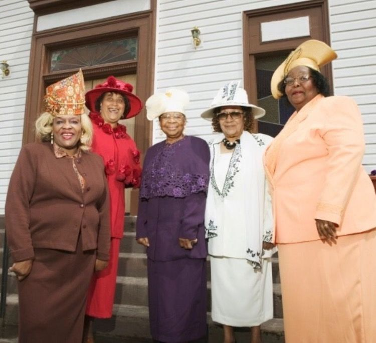
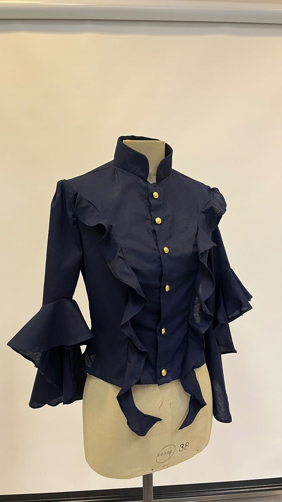
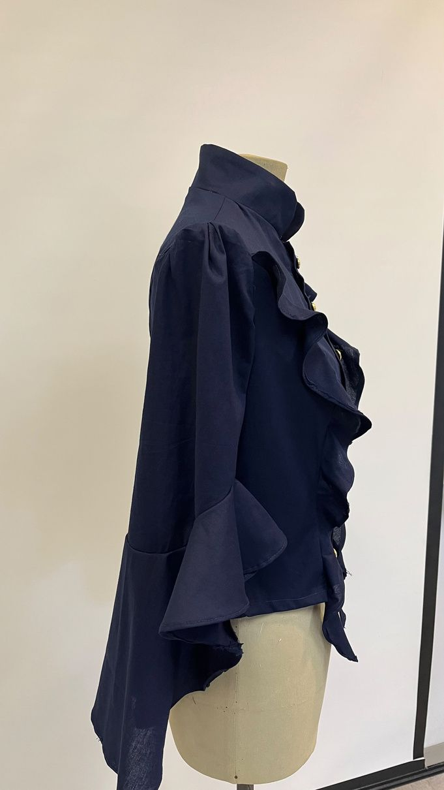
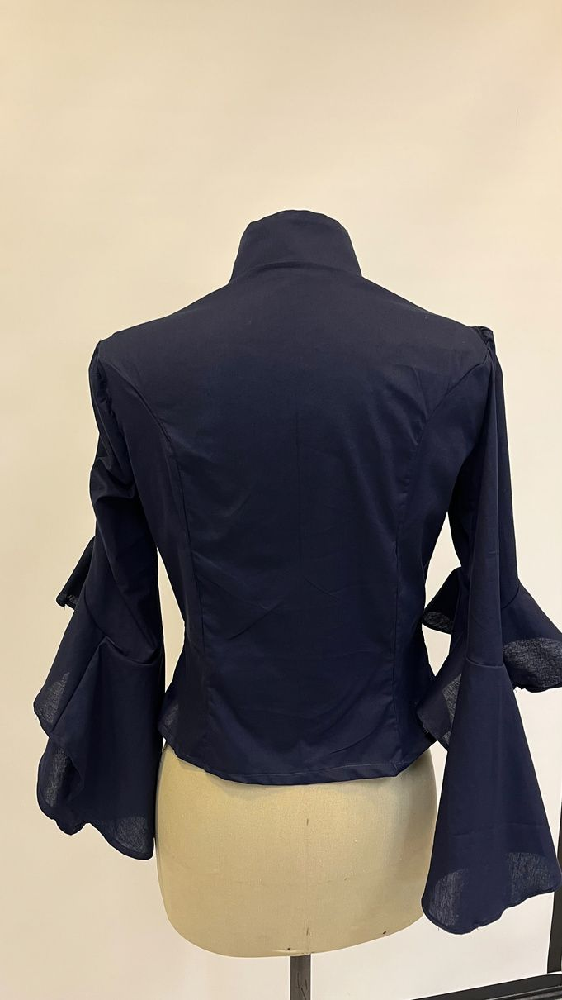
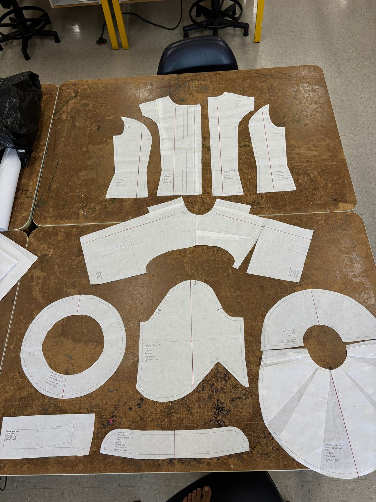
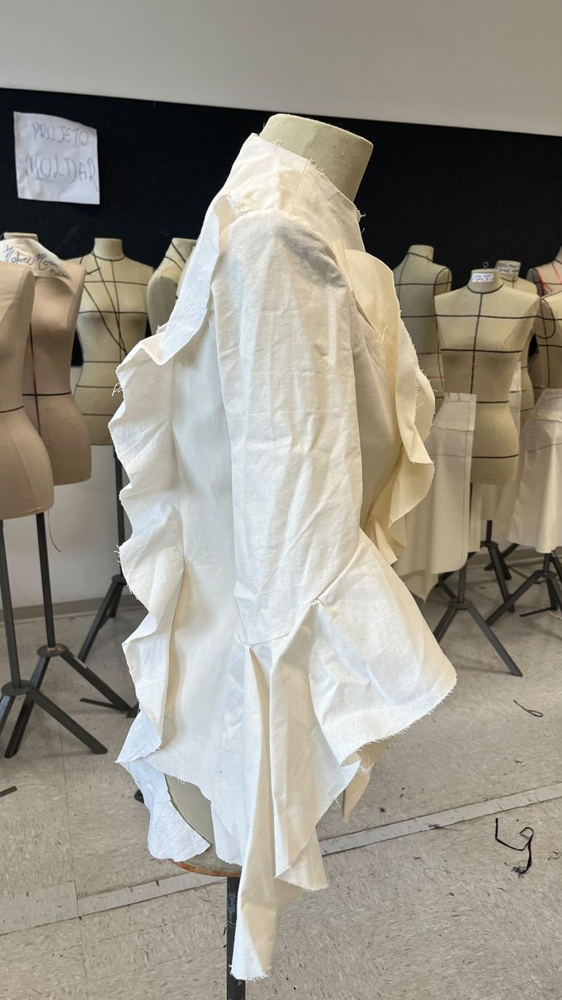
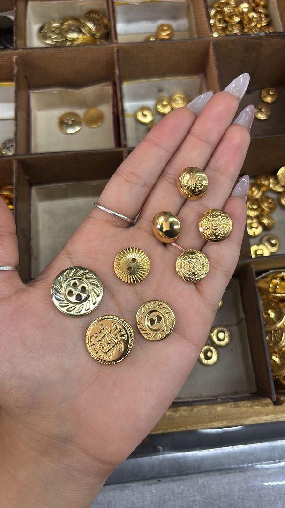
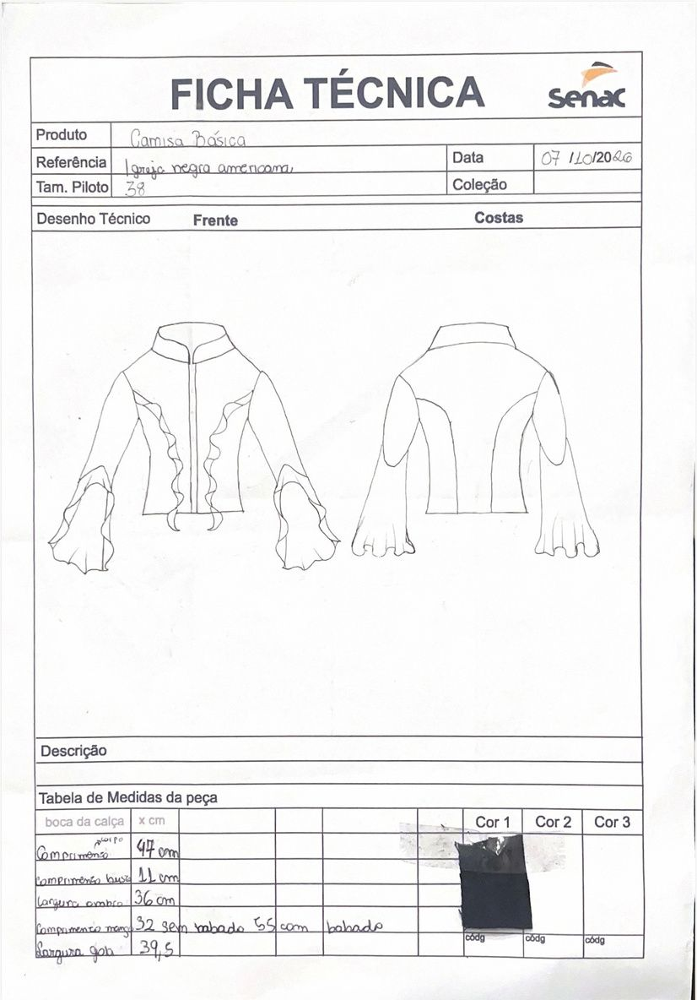

Sunday best:
o melhor domingo.
Uma camisa inspirada na igreja negra americana e na The Ramp Church: gola padre, babados, mangas em sino e botões dourados.

Nas comunidades negras dos EUA, a igreja era também lugar de vida comunitária e social. Durante a semana, muitas pessoas trabalhavam de uniforme ou com roupas neutras, sem poder mostrar quem eram.
O domingo virou o Sunday best: o dia de vestir chapéus, tule, terno, acessórios e muita cor. A liberdade de se vestir do próprio jeito, não do jeito que a sociedade impunha.
Levamos para a camisa os volumes, os broches e a gola padre.







“Foi algo desafiador e que valeu a pena, porque me fez conhecer e aprender mais sobre alfaiataria, modelagem e, principalmente, costura.”
Ana Clara
Igreja Negra Americana / Ana Clara Martins e Gabriela Leite / Senac, 2026, 2º semestre